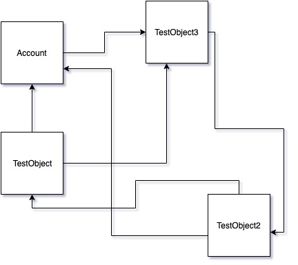

SFDMU Help Center
SFDMU Help CenterThe SFDX Data Move Utility (SFDMU) is a powerful and versatile tool designed to facilitate complex data migration and synchronization processes between Salesforce organizations. As a fully-featured, open-source solution, SFDMU offers significant advantages for Salesforce administrators and developers looking to streamline their data handling practices.
👉 Use the SFDMU GUI Application to easily configure and run the migration jobs.
With this Desktop Application, there’s no need for Notepad and Console. All tasks are performed visually, significantly simplifying migration job management.
SFDMU New Improved Version of the Plugin#
The new improved version of the plugin described in this section is built on the new SF CLI API and includes the latest available security updates. The latest pre-refactoring line was v4.39.0 from the previous engine generation. We recommend moving to the new improved version of the plugin if it works correctly in your environment. If it does not work correctly yet, temporarily roll back to v4.39.0.
What Changed in the New Improved Version of the Plugin#
The list below is based on the official old-vs-new engine comparison and includes all new/changed/legacy differences between the old and new engines.
Script-level behavior changes
apiVersiondefault is now auto-resolved from org capabilities.- for
org -> org, SFDMU uses the lower version ofmax(source)andmax(target). - for
org -> csvfileorcsvfile -> org, SFDMU uses the max version of the org side. - if
apiVersionis set explicitly inexport.jsonor via--apiversion, that explicit value is used as-is.
- for
validateCSVFilesOnlykeeps the same default but now uses an expanded validation/repair pipeline.excludeIdsFromCSVFilesbehavior was tightened forId/lookup-id/__rhandling.useSeparatedCSVFilesnow affects user CSV read/write and ExportFiles pathing consistently across object sets.
New CSV configuration capabilities
- new
csvFileDelimiter(single delimiter control for non-service CSV files). csvReadFileDelimiterandcsvWriteFileDelimiterare now legacy/deprecated fallback options.- new
csvFileEncoding. - new
csvInsertNulls(Data Loader-like null semantics). - new
csvUseEuropeanDateFormat. - new
csvWriteUpperCaseHeaders. - new
csvUseUtf8Bom.
- new
ScriptObject behavior changes
- object
namenormalization is stricter and more stable for case/metadata mismatches. operationhandling is stricter and normalized by CRUD permissions.deleteOldDatais safer and now respects target object deletable capability.deleteByHierarchyhandling was improved for complex delete scenarios.useFieldMappinghas stronger guard rules around CRUD and target metadata.
- object
Add-on and file processing changes
core:ExportFileswas significantly expanded:- supports
org -> org,org -> csvfile, andcsvfile -> org; - includes Attachment processing in
core:ExportFilesflow; - supports
baseBinaryFilePath; - supports object-set-aware file paths via
useSeparatedCSVFiles.
- supports
- file migration is more centralized in
core:ExportFiles. - custom add-on development now has a formal Custom SFDMU Add-On SDK with a documented template/build workflow, making new add-on modules easier to create and maintain; see Custom Add-On API Object Reference.
Data Loader compatibility
- the new engine is now fully compatible with Salesforce Data Loader CSV/file workflows.
- why:
core:ExportFilesnow runs Data Loader-style file package flow forContentVersion,ContentDocumentLink,Attachment, andNote.- file workflows are supported in all media directions in
core:ExportFiles:org -> org,org -> csvfile, andcsvfile -> org. - Data Loader-like null behavior is supported via
csvInsertNulls(#N/Aand null restore). - CSV format controls needed for Data Loader pipelines are explicit:
csvFileDelimiter,csvFileEncoding,csvUseUtf8Bom,csvUseEuropeanDateFormat. - CSV values are written quoted by default via
csvAlwaysQuoted.
CLI changes
- new
--diagnosticflag for extended diagnostic logging and run snapshot details. - new
--anonymiseflag to hash sensitive values in.logfiles for safer log sharing and improved security. - new
--failonwarningflag to treat any warning as an error and stop execution immediately. --filelogdefault changed from1to0.--verboseis now legacy/no-op (kept only for compatibility).--conciseis now legacy/no-op (kept only for compatibility).--usesfis now legacy/no-op (kept only for compatibility).
- new
Legacy compatibility kept
useCSVValuesMappingremains for backward compatibility.
Breaking Changes and Migration Notes for the New Improved Version of the Plugin#
The following items can break existing automation or change behavior of existing jobs:
- standalone Node.js/module execution mode is no longer supported; use
sf sfdmu run. - default
apiVersionis now auto-resolved from org capabilities, so behavior can differ from fixed-version legacy automation. --filelognow defaults to0, so.logfiles are not guaranteed unless you enable logging (--diagnosticis recommended).--verbose,--concise, and--usesfno longer change runtime behavior.operationvalidation is stricter; invalid or not-allowed operations are rejected earlier.- CSV delimiter precedence changed:
- if you previously relied on
csvReadFileDelimiter/csvWriteFileDelimiteronly, migrate tocsvFileDelimiter.
- if you previously relied on
- CSV id/reference handling became stricter (
excludeIdsFromCSVFiles+ new post-processing flow).
How to Adjust Existing Jobs and Source CSV Files#
- API version:
- if your automation depends on a fixed version, pin
apiVersionexplicitly.
- if your automation depends on a fixed version, pin
- File logging:
--filelognow defaults to0; use--filelog 1or--diagnosticwhen logs are required.- if logs must be shared outside your team, use
--anonymiseto hash sensitive values in.logfiles.
- Legacy CLI flags:
- Operation validation:
- verify each object
operationagainst target CRUD permissions; invalid operations are now rejected earlier.
- verify each object
- CSV delimiter precedence:
- migrate delimiter configuration to
csvFileDelimiter; - keep
csvReadFileDelimiter/csvWriteFileDelimiteronly as legacy fallback.
- migrate delimiter configuration to
- CSV id/reference behavior:
- if you migrate using old CSV files, re-export them once with the new version before production runs;
- the engine always adds relationship reference columns with
__r; - when
excludeIdsFromCSVFiles=true, the engine removes rawIdand lookup...Idcolumns; __rmeans relation-by-reference (not Salesforce recordId), mapped by parent external-id values;- examples of
__rcolumns:Account__r.NameAccount__r.External_Id__cParent__r.Name
Temporary Rollback to Previous Stable Plugin#
If the new improved version of the plugin does not work for your scenario yet, you can temporarily
install the previous line
(4.39.0):
# Remove current plugin
sf plugins uninstall sfdmu
# Install previous stable version
sf plugins install sfdmu@4.39.0
To switch back to the latest line later:
sf plugins install sfdmu@latest
Reporting Bugs in the New Improved Version of the Plugin#
If you find a bug in the new improved version of the plugin, please report it.
For issue analysis, run with --diagnostic and --anonymise, then attach the full generated log file; without the complete diagnostic log, troubleshooting is usually not possible.
For the full masked/non-masked list, see: /full-documentation/reports/the-execution-log#what-is-masked-and-what-is-not
Example:
sf sfdmu run --sourceusername source@name.com --targetusername target@name.com --diagnostic --anonymise
Please include:
- full
.logfile generated by the run; - your
export.jsonand related CSV samples (sanitize secrets or sensitive data if needed); - exact command line and plugin version.
Step 1. Install the SFDMU#
Before you install and use the SFDMU Plugin, ensure that the SF CLI is installed on your system.
Use the following commands to manage SFDMU installation:
# Uninstall an old version of the Plugin, if any:
$ sf plugins uninstall sfdmu
# Install the latest version of the Plugin:
$ sf plugins install sfdmu
# Or install the latest version using an explicit latest tag:
$ sf plugins install sfdmu@latest
# Or install a specific plugin version:
$ sf plugins install sfdmu@<version>
Notes:#
- If you encounter permission issues on MacOS, use the
sudoprefix with the installation command:
$ sudo sf plugins install sfdmu
Step 2. Configure the Migration Job#
Basic Configuration Example: Upserting Accounts#
Create an export.json file like this for basic account upserts:
{
"objects": [
{
"query": "SELECT Id, Name FROM Account",
"operation": "Upsert",
"externalId": "Name"
}
]
}
Advanced Configuration Example: Upserting Multiple Related SObjects#
Assume, the data model appears as the following:

For this data model with complex circular relationships, use a configuration like this to maintain relationships during upserts:
{
"objects": [
{
"query": "SELECT Id, Phone, TestObject3__c FROM Account WHERE Name LIKE 'TEST_ACC_%'",
"operation": "Upsert",
"externalId": "Name"
},
{
"query": "SELECT Id, Account__c, TestObject3__c, RecordTypeId FROM TestObject__c",
"operation": "Upsert",
"externalId": "Name"
},
{
"query": "SELECT Id, Account__c, TestObject__c FROM TestObject2__c",
"operation": "Upsert",
"externalId": "Name"
},
{
"query": "SELECT Id, TestObject2__c FROM TestObject3__c",
"operation": "Upsert",
"externalId": "Name"
}
]
}
Important Notes#
- Ensure the correct spelling of object API names in export.json queries as they are case-sensitive.
Step 3. Run the Migration Job#
Navigate to your export.json directory and execute the appropriate command to initiate migration:
- Direct migration between Salesforce orgs:
$ sf sfdmu run --sourceusername source@name.com --targetusername target@name.com
- Import data from CSV files:
$ sf sfdmu run --sourceusername csvfile --targetusername target@name.com
- Export data into CSV files:
$ sf sfdmu run --sourceusername source@name.com --targetusername csvfile
Demonstration Video#
Watch SFDMU in action in this demonstration video.
This demonstration provides all the essential steps and configurations to get started with SFDMU for efficient data migration in Salesforce: